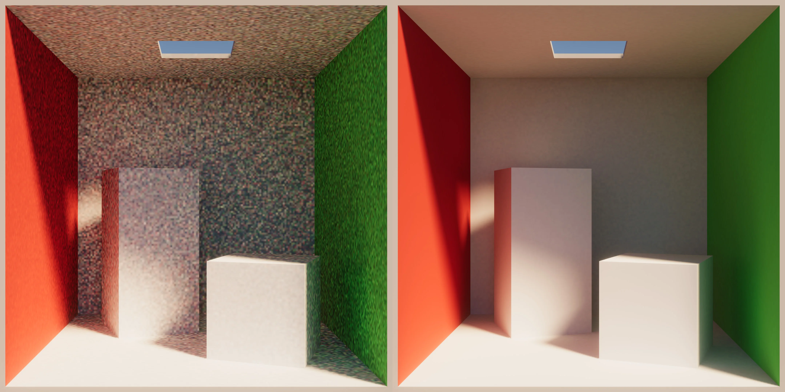
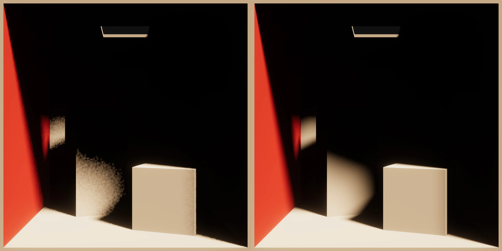
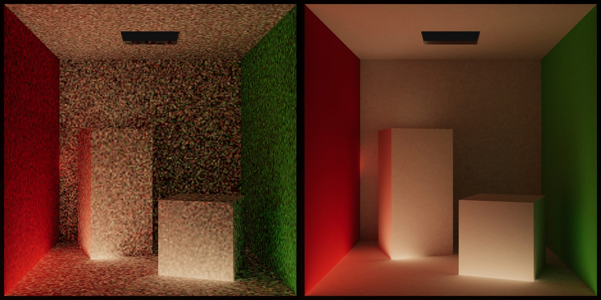
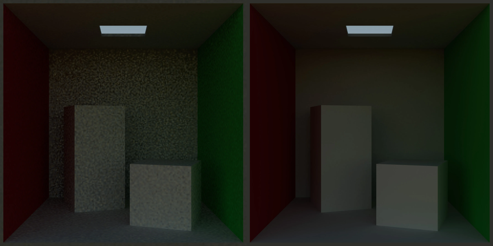

Fix issues causing speckled noise in lit scenes.

Example: All sample counts are set to 8 (left). All sample counts are set to 2048 (right).The Progressive Lightmapper is a Monte Carlo path tracer. Insufficient ray counts lead to noisy lightmaps, and increasing the number of rays the lightmapper spawns from each lightmap texel helps to reduce the noise in the lightmaps.
To fix the issue of too much noise, you can increase the sample size from direct, indirect, and environment sources to reduce lightmap noise, and use denoiser and filters. Note that when increasing samples, this will increase bake times in a linear fashion.
Note: To make easier to debug issues, got to the Lighting window, and set the Filtering property to None.
Direct samples control the number of rays, which the lightmapper shoots towards light sources.

Example: Scene lit only by direct light. Direct samples are set to 8 (left). Direct samples are set to 2048 (right).Use this method of increasing direct samples if:
Indirect samples control the number of paths, which the lightmapper shoots towards the GI contributors in the scene.

Example: Scene lit only by the indirect bounce light. Indirect samples are set to 8 (left). Indirect samples are set to 2048 (right).Once these paths intersect geometry, texels spawn rays towards:
Paths can bounce off surfaces. Some ways Unity can end a path are:
Use this method of increasing indirect Samples if:
Environment samples control the number of rays, which the lightmapper shoots towards the sky/environment.

Example: Scene lit only by environment lighting. Environment samples are set to 8 (left). Environment samples are set to 2048 (right).Use this method of increasing environment samples if:
Note: that you would need to disable all lights in the scene to verify this.
Unity can apply a post-processing step to remove noise by using filtering or machine learning denoisers.
To enable filtering, navigate to the Lighting window (menu: Window > Rendering > Lighting) and select the Filtering property, and select from three options:
Available filters:
Available machine learning denoisers:
Experiment with different denoiser and filtering combinations to achieve the best results for your project.